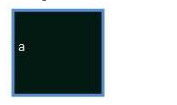
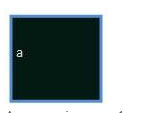

Square
Area of Square

A square is a regular polygon with four sides. It has four right angles and parallel sides. To calculate the area of a square, multiply the base by itself, which can be expressed as side × side. If a square has a base of length 8 inches its area will be 8 × 8= 64 square inches
Area of a square is given by:
A = a2
where a = length of side
Perimeter of a square = 4a
Diagonal of a square = (a)(sqrt(2)) or 1.414 (a)
Example 1: Find the area of a square of side length 15 m
Solution:
Area of a square = a2 = 152 = 225 m2
Example 2: Calculate the area of square, where the square has 35cm side’s length.
Solution:
Area of square is defined by a × a.
Area = 35 × 35
Area = 1225cm2
Example 3: What is the area of a square field, if its perimeter is 32 yd?
Solution:
The perimeter of the square field = 32 yd and since the perimeter of a square is given by P = 4s, where s is the length of the side. We can easily determine the length by isolating s from the formula above:
s = P/4 = 32 / 4 = 8 yd
The area of the square field = s × s
Substitute the value of s, we have:
Area = 8 × 8 = 64 yd2
The area of the square field is therefore 64 yd2.
Example 4: The side of a square park is 200 m. What will be the cost of grassing it @ $0.5 per sq m?
Solution:
What we need to do, is to find the area of the park then multiply the area by the cost per m2.
Area of the square park = side × side
A = s²
Substitute values and simplify.
A = 200 × 200
A = 40,000 m2
Area of grassing = area of park = 40,000 sq m.
Cost of grassing = area of grassing × rate per sq meter.
Substitute values we will get:
Cost = 40,000 x 0.5 = $20,000
Therefore, Cost of grassing is $20,000.
Example 5: A square lawn is surrounded by a path 2 m wide around it. If the area of the path is 160 sq m, find the area of the lawn.
Solution:
Given: A square lawn is surrounded by 2 m wide path; area of path is 160 sq m.
To find: Area of lawn.
(Hint: Lawn is surrounded by the path i.e the path is at external edge of lawn. to find area of lawn subtract area of paths from total area)
Let side of the lawn be y, then we have:
External side including path = side of lawn + width of path on both sides.
= y + (2 + 2)
= y + 4
Total area including path = (y + 4) × (y + 4).
= y² + 8y + 16 (i).
And the area of lawn = (side)² = y × y = y² (ii).
Since the area of the path is given (160 m2), we have:
Area of path = Total area including path - area of lawn.
A = (i) - (ii).
Substitute the given values we will the following equation and by isolating y, we can determine the length of side of the lawn:
160 = (y² + 8y + 16) - y²
160 = y² + 8y + 16 - y²
160 = y² - y² + 8y + 16
160 = 8y + 16
160 - 16 = 8y
144 = 8y
18 = y
Side of lawn = 18 m
Area of the lawn = side × side
A = s²
A = 18 × 18
A = 324 m2
Hence the area of lawn = 324 m2.
Perimeter of Square

A square is a regular quadrilateral and it has four equal sides and four equal angles (90 degree angle or right angles).
A square quadrilateral with vertices ABCD would be denoted by ABCD. The perimeter of a square (quadrilateral) is given by:
P = 4a
Where a is the length of each side.
Properties of square:
· Diagonals of a square (quadrangle) bisect each other
· Diagonals of a square (quadrangle) bisect its angles.
· Diagonals of a square (quadrangle) are perpendicular.
· Opposite sides of a square (quadrangle) are both parallel and equal.
· All four angles of a square (quadrangle) are equal. (Square is 360/4 = 90 degrees, so every angle of a square (quadrangle) is a right angle.)
· The diagonals of a square (quadrangle) are equal.
Example 1: Find the area and perimeter of the square whose side length is 4 meters.
Solution:
Given that:
a = 4m
Area of square = a2 = 4 × 4 = 16 m2
Perimeter of the square = 4 × 4 = 16 m
Example 2: Find the perimeter of square whose sides are 16 cm in length.
Solution:
Perimeter of the square:
P = 4a
P = 4 × 16 cm
P = 64 cm
Hence, the perimeter of square is 64 cm.
Example 3: What is the perimeter of a square, if the length of each side is 13 ft?
Solution:
The length of each side of a square is 13ft.
The perimeter of a square:
P = 4 × a
P = 4 × 13
P = 52 ft
The perimeter of the square is 52 ft.
Example 4: The perimeter of a square is 24 cm. What would the length of its sides be, if its perimeter is increased by 4 cm?
Solution:
New perimeter of the square = 24 + 4 = 28 cm.
New perimeter of the square = 4 × the new length of a side of the square
Let the new length of a side of the square = l cm
a = 7 cm
Example 5: The area of a square park is 225 m2. Find its perimeter.
Solution:
Given:
Since the area is 225 m2, the length of the sides can easily be determined:
A = s²
225 = s²
s = 15m
Thus, the perimeter of park is:
P = 4 × s.
P = 4 x 15 m.
P = 60 m.
Example 6: Find the perimeter of the square, whose side length is 9.2 meters.
Solution:
Given: Side length (a) = 9.2 meters
Perimeter of the square = 4 × a
= 4 × 9.2
Perimeter of the square = 36.8 meters.